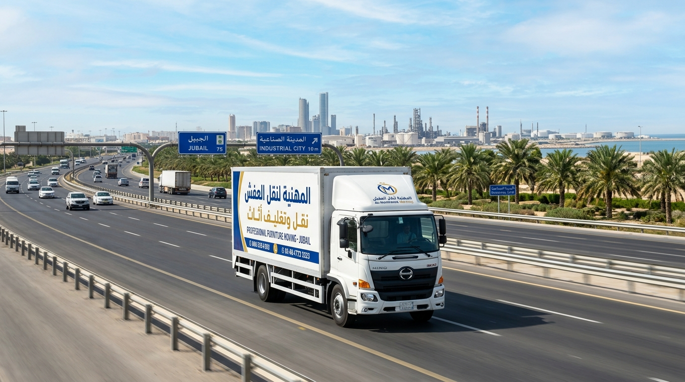

1. مسار النقل البري بين جدة والجبيل: المسافة الحقيقية (1400 كم) والزمن الفعلي
تعتبر رحلة نقل عفش من جدة إلى الجبيل من أطول وأهم مسارات الشحن الداخلي بين غرب المملكة وشرقها؛ حيث تقطع شاحنات النقل عرض الجزيرة العربية بالكامل لمسافة تمتد لنحو 1,390 إلى 1,420 كيلومتراً. وتستغرق شاحنة النقل دينا حوالي 14 إلى 16 ساعة قيادة فعلية تتخللها فترات راحة نظامية وتناوب سائقين معتمدين لضمان سلامة الشحنة، ويصل الأثاث إلى الجبيل ويتم تسليمه وتركيبه خلال 24 إلى 48 ساعة كحد أقصى من بدء التحميل بجدة.
تعتمد شركة القصر السعودي على مسار لوجستي متقدم يضمن سلاسة الحركة وتفادي العواصف الرملية:
طريق الرياض السريع ثم طريق الظهران - الجبيل (طريق 40 ثم 95)
المسار السريع الأحدث والأكثر أماناً: ينطلق من جدة عبر طريق مكة/الرياض السريع (طريق 40) عابراً الطائف، ظلم، عفيف، القويعية، الرياض، ثم الانطلاق عبر طريق الدمام السريع والتفرع لطريق الظهران - الجبيل السريع (طريق 95) للدخول المباشر للجبيل الصناعية والبلد.
المسافة: 1,400 كم | زمن الشاحنة: 14 - 15 ساعةطريق الرياض - رماح - شوية - الرفيعة - الجبيل (المسار المباشر)
مسار الشاحنات المباشر الذي يتفادى دخول حاضرة الدمام والخبر؛ ينعطف شمال شرق الرياض ليدخل الجبيل الصناعية مباشرة عبر طريق الصمان، موفراً قرابة 60 كم ويُسلك بناءً على توجيهات المرور وحالة حركة السير.
المسافة: 1,385 كم | زمن الوصول: 14 ساعةيمر الأثاث بـ 3 أقاليم مناخية متباينة: رطوبة ساحل جدة، حرارة وجفاف وعواصف الرمال في صحراء نجد والدهناء، وصولاً إلى الرطوبة العالية والأملاح البحرية في ساحل الجبيل والخليج العربي. نتغلب على هذه الظروف باستخدام شاحنات دينا مقفلة تماماً بإحكام بصناديق ألمنيوم معزولة حرارياً ونظام التغليف الخماسي المقاوم للرطوبة والأتربة.

2. أسطول شاحنات دينا مقفلة مجهزة لخط 1400 كم وسائقان متناوبان
إن قطع مسافة 1400 كم يتطلب شاحنات بحالة فنية استثنائية ونظام أمان متكامل يحمي العفش من الاهتزاز والحرارة:
دينا إيسوزو مقفلة 4.5 م
مثالية لشقق الاستوديو و2 إلى 3 غرف ودبش العرائس. صندوق مغلق محكم العزل ضد الغبار ومبطن باللباد لحماية الطلاء والأخشاب طوال مسافة 1400 كم.
دينا جامبو 6 متر صندوق عالي
مخصصة للشقق الكبيرة (4 - 5 غرف) والفلل. مساحة استيعاب هائلة مع نظام تعليق هوائي وأحزمة شد ميكانيكية تثبت القطع الثقيلة وتمنع احتكاكها.
طاقم قيادة بسائقين متناوبين
نلزم كل شاحنة متجهة للجبيل بوجود سائقين نظاميين محترفين يتناوبان على القيادة لتفادي الإرهاق وضمان استمرار الشاحنة بأعلى درجات اليقظة والأمان.
3. جدول أسعار نقل العفش من جدة إلى الجبيل (تحديث شفاف 2026)
نلتزم في شركة القصر السعودي بسياسة تسعير واضحة ومحددة بدون أي تكاليف مستترة أو مفاجآت عند التسليم. إليك تفاصيل التكلفة الشاملة لكافة متطلبات النقل:
| حجم المنقولات والسكن | نوع الشاحنة والمركبة | الخدمات المشمولة | السعر بالريال السعودي (SAR) |
|---|---|---|---|
| استوديو أو غرفة فردية أو شحنة جزئية | شحنة مجمعة / دينا مخصصة | فك وتركيب سرير ودولاب + تغليف خماسي + توصيل للباب بالجبيل | 1,500 - 1,800 ريال |
| شقة صغيرة (2 - 3 غرف وصالة ومجلس) | دينا إيسوزو مقفلة 4.5 م | فك وتركيب غرفتين + مطبخ + تغليف خماسي + تحميل وتنزيل بضمان 100% | 2,600 - 3,200 ريال |
| شقة متوسطة أو كبيرة (4 - 5 غرف وصالة) | دينا جامبو 6 متر صندوق عازل | فك وتركيب كامل + تغليف مزدوج حراري + كراتين + تتبع GPS | 3,800 - 4,600 ريال |
| فيلا كاملة أو دور مستقل بالجبيل الصناعية | شاحنتين دينا أو تريلا 12 م | طاقم نجارين وفنيين + ونش هيدروليكي + ترتيب كامل وتسليم المفتاح | 7,000 - 8,500 ريال |
| نقل مكاتب وشركات ومعدات صناعية | شاحنات دينا مجهزة للمكاتب | فك مكاتب وقواطع + تغليف سيرفرات وأجهزة + كراتين ملفات سرية | 3,200 - 5,000 ريال |
| باقة VIP: دبش العروسة والأطقم الفاخرة | دينا معقمة مخصصة بالكامل | كراتين تعليق فساتين + صناديق مبطنة للمكياج والعطور + ترتيب فاخر | 1,800 - 2,800 ريال |
خصم خاص 25% للحجوزات المبكرة ولمنسوبي الهيئة الملكية وشركات سابك وأرامكو والقطاعات العسكرية!
4. فواتير معتمدة وعقود رسمية لصرف "بدل الترحيل" لموظفي سابك وأرامكو والهيئة الملكية
تستقبل الجبيل الصناعية سنوياً مئات الكفاءات والمهندسين والموظفين المنتقلين من فروع جدة والغربية إلى مقرات المصانع والشركات الكبرى. نوفر كافة التسهيلات المحاسبية والنظامية المعتمدة:
فاتورة ضريبية إلكترونية معتمدة (ZATCA)
فاتورة نظامية معتمدة برمز QR والسجل التجاري والرقم الضريبي معترف بها لدى إدارة الموارد البشرية والمالية بشركات سابك وأرامكو وصدارة.
عقد نقل وبوليصة شحن تفصيلية
عقد رسمي محدد به نقطة الاستلام (جدة) والتسليم (الجبيل) مع بيان حصر الأثاث وقيمته لصرف استحقاقات بدل الترحيل وبدل النقل دون أي تأخير.
شهادة استلام وتسليم نهائية
إشعار تسليم مختوم يثبت وصول العفش وتسليمه في مسكنك المخصص بالجبيل الصناعية أو البلد لإقفال عهدة النقل بنجاح.
5. تغطية شاملة لكافة أحياء الجبيل الصناعية وأحياء الجبيل البلد
تمتلك طواقمنا دراية كاملة بمخططات واشتراطات الهيئة الملكية للجبيل وينبع لضمان الدخول السلس وتنزيل العفش في كافة الأحياء:
أحياء الجبيل الصناعية (الهيئة الملكية):
حي جلمودة، حي الفردوس، حي الحويلات، حي الفناتير، حي الدفي (محلة الأندلس، الفيحاء، الفردوس)، حي نجد، حي مكة، حي دارين، حي المطرفية، وحي الشاطئ. نلتزم باشتراطات النظافة والهدوء ومواعيد التحميل المعتمدة بالهيئة.
أحياء مدينة الجبيل البلد والضواحي السكنية:
حي المرقاب، حي الجوهرة، حي اليمامة، حي الحمراء، حي الضباب، حي السلام، حي طيبة، حي الخالدية، وحي الروضة بالجبيل البلد، مع إيصال العفش لأي دور عبر الأوناش والعمالة المتخصصة.
المجمعات السكنية ومجمعات الشركات الصناعية:
مجمعات إسكان موظفي سابك، مجمعات أرامكو، صدارة، كيميا، ساسرف، ومجمعات القاعدة البحرية بالجبيل مع توفير تصاريح الدخول والتنسيق الأمني المطلوب.
6. تقنيات التغليف الخماسي المقاوم لغبار الصحراء ورطوبة وأملاح الخليج
إن قطع مسافة 1400 كم عبر مناخات متعددة يفرض تطبيق أعلى معايير العزل لحماية الأخشاب والأجهزة الحساسة:
عزل مباشر لأسطح الأخشاب والدهانات اللامعة لحمايتها من تغيرات درجات الحرارة بين الغربية والشرقية.
امتصاص الاهتزازات الناتجة عن المطبات وعيون القط على الطرق السريعة؛ مخصص للشاشات، الأجهزة، والتحف.
تثبيت دعامات زوايا صلبة لحماية حواف الدواليب، طاولات الرخام، والأبواب الزجاجية من أي صدمة جانبية.
لف كامل للشحنة بالبلاستيك المطاطي الحراري لمنع تسرب الرطوبة والأملاح الساحلية للجبيل نهائياً.
7. فك وتركيب غرف النوم والمطابخ والمكيفات بأيدي نجارين وفنيين مهرة
يقود عملية النقل طاقم فني متكامل يمتلك المهارة والأدوات الحديثة لإعادة تجميع أثاثك في مسكنك بالجبيل بنفس دقة المصنع:
- فك وترقيم غرف النوم: فك غرف النوم الإيطالية والمودرن والإيكيا مع وضع كود رقمي على الألواح وتجميع البراغي في أكياس ممغنطة لمنع ضياعها.
- فك وتعديل وتركيب المطابخ: فك المطابخ الألمنيوم والخشبية وتعديل مقاسات الرخام الطبيعي والصناعي ليناسب مطبخ منزلك الجديد بالجبيل.
- فك وتركيب مكيفات السبليت: فنيو تكييف يتولون فك المكيفات بجدة مع الحفاظ على غاز الفريون، وإعادة تركيبها وضبطها واختبار تبريدها بالجبيل.
- تركيب وضبط موازين الأثاث بالليزر: استخدام ميزان الليزر المائي لضبط استقامة الدواليب والمطابخ لمنع أي ميول أو صرير في الأبواب.
8. خدمة VIP مخصصة لنقل "دبش العروسة" وتجهيزات الزواج بين جدة والجبيل
نخصص باقة VIP متكاملة لنقل جهاز العروس والمفروشات الفاخرة لضمان وصولها بأعلى درجات الخصوصية والأناقة:
دواليب كرتونية لتعليق الفساتين
كراتين دولاب مزودة بقضبان تعليق لحفظ فساتين الزفاف، العبايات، والمفارش الفاخرة دون أي تجعد طوال مسافة 1400 كم.
صناديق مبطنة للمكياج والعطور
تغليف قطيفة وفوم عازل لزجاجات العطور وأدوات التجميل وأطقم الكريستال لحمايتها من الكسر أو التسريب أثناء السفر.
دينا معقمة وخاصة بالكامل
تخصيص سيارة مغلقة ومعقمة ومخصصة فقط لشحنة العروس دون أي أغراض أخرى لضمان أقصى درجات النظافة والفخامة والخصوصية.
9. شحن المكاتب وأثاث الشركات والمعدات الصناعية بالجبيل
توفر شركة القصر السعودي حلولاً لوجستية احترافية للمؤسسات والشركات الصناعية المنتقلة بين جدة والجبيل:
- • تفكيك وتغليف المكاتب الإدارية: فك مكاتب المدراء، طاولات الاجتماعات، وخزائن الملفات المعدنية والخشبية.
- • تأمين الأجهزة الإلكترونية والسيرفرات: تغليف خاص بأكياس مضادة للشحنات الساكنة وفوم ممتص للصدمات لحماية السيرفرات والشاشات وأجهزة الحاسب.
- • نقل الملفات والمستندات في صناديق سرية: توفير كراتين مرقمة ومغلقة بإحكام لحفظ أرشيف الشركات والمستندات الحساسة بأمان وسرية.
- • الالتزام بالجدول الزمني للشركات: النقل خارج أوقات الدوام الرسمي لضمان استئناف العمل بمقر الجبيل دون أي تعطيل للإنتاجية.
10. مراحل النقل المنظمة وتتبع خط السير المباشر عبر الـ GPS
نطبق خطة عمل مدروسة من البداية وحتى تسليم المنزل في الجبيل جاهزاً للسكن:
المعاينة وتحديد حمولة الشاحنة والموعد
معاينة مجانية بجدة لتحديد حجم الأثاث وتوفير نوع الدينا المناسب والاتفاق على توقيت الانطلاق للجبيل.
الفك والتغليف الخماسي والرص الهندسي
تغليف كل قطعة بمواد العزل الخماسية، وتوزيع الأحمال داخل الدينا وتثبيتها بأحزمة الأمان لمنع اهتزازها بالصحراء.
الانطلاق والمتابعة المباشرة عبر الواتساب (GPS)
إرسال رابط تتبع مباشر للعميل يوضح موقع الدينا وسرعتها ومحطات الاستراحة حتى وصولها للجبيل خلال 24 - 48 ساعة.
التنزيل وإعادة التركيب والتنظيف بالجبيل
رفع العفش وإعادة تركيب الغرف والمطابخ والمكيفات بموازين الليزر، وتنظيف مخلفات التغليف وتسليم الضمان وفواتير بدل الترحيل.
11. مقارنة: شركة القصر السعودي مقابل الناقلين العشوائيين على خط الجبيل
| وجه المقارنة | شركة القصر السعودي لنقل العفش | العمالة والناقلون العشوائيون |
|---|---|---|
| نوع الشاحنة وتجهيزها | دينا مغلقة ومعزولة حرارياً ومبطنة باللباد لحماية الطريق الصحراوي | دينا مكشوفة أو شراع خفيف يعرض العفش للشمس والغبار والأمطار |
| نظام التتبع (GPS) | رابط تتبع لايف مباشر للعميل عبر الواتساب على مدار الساعة | لا يوجد أي تتبع وصعوبة متواصلة في التواصل مع السائق |
| سائقو المسافات الطويلة | سائقان نظاميان معتمدان يتناوبان على القيادة لمسافة 1400 كم | سائق واحد يواجه خطر الإرهاق الشديد وحوادث الطرق الصحراوية |
| التغليف ومواد الحماية | تغليف خماسي (فوم، بابلز، كرتون مضغوط، استرتش، وأحزمة شد) | تغليف عشوائي بطبقة نايلون واحدة يتسبب في خدش وكسر العفش |
| الضمان وفواتير بدل الترحيل | عقد رسمي وضمان 100% مع فواتير ضريبية إلكترونية معتمدة (ZATCA) | بدون ضمان وبدون فواتير رسمية وإخلاء مسؤولية فوري عند أي كسر |
12. الأسئلة الشائعة حول نقل العفش من جدة إلى الجبيل
آراء وتقييمات عملائنا في رحلات جدة - الجبيل
تجارب حقيقية موثقة لمهندسين وعائلات نقلوا أثاثهم ومكاتبهم معنا
"نقلت عفش فيلا كاملة بعد انتقالي لفرع سابك بالجبيل. مسافة 1400 كم قطعتها الشاحنة مع سائقين اثنين وتتبع GPS لايف. وصل الأثاث بحالة ممتازة وسلموني فاتورة ضريبية وعقد شحن صرفت به بدل الترحيل من الشركة مباشرة. شكراً لاحترافيتكم."
"التغليف الخماسي بالفوم والبابلز والكرتون كان فائق الإحكام. شاشات التلفزيون والأطقم الخشبية لم تتعرض لأي خدش أو أتربة رغم طول مسار الطريق الصحراوي. طاقم التركيب بالجبيل كان منظماً ولبقاً جداً."
"أفضل شركة نقل عفش من جدة إلى الجبيل. باقة VIP لدبش ابنتي كانت تبيض الوجه، دينا معقمة وكراتين تعليق فساتين حفظت الملابس من التجعد، وصناديق مبطنة للمكياج والعطور. جزاكم الله خيراً على الأمانة والاهتمام."
"نقلنا مكاتب ومعدات طبية حساسة من جدة إلى الجبيل البلد. التزام كامل بالمواعيد، عمالة مدربة، وتأمين حقيقي على كافة المنقولات. تجربة ممتازة ونوصي بالتعامل معهم بلا تردد."
هل تخطط لنقل عفشك من جدة إلى الجبيل؟
تواصل معنا الآن لتحصل على معاينة مجانية، خصم فوري 25%، وفاتورة ضريبية معتمدة لبدل الترحيل مع ضمان سلامة منقولاتك لمسافة 1400 كم.